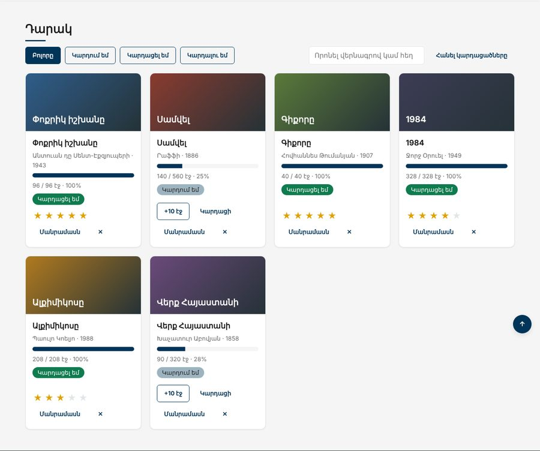

Տնային աշխատանք · JS Դաս 12 · մինի-նախագիծ
Դաս 11-ի խնդիրը լուծվում է դելեգացիայով․ մեկ մշակիչ #books-ի վրա, որը երբեք չի ջնջվում։ Դարակի քարտերը ստանում են գործողություններ՝ «+10 էջ», «Կարդացի», աստղերով գնահատական, «Հանել»։
Դաս 01–12․ փուչիկացում, closest, data-action, մեկ ճշմարտության աղբյուր, confirm։

Աշխատիր քո կայքում (կամ նախորդ դասի օրինակում)։ CSS-ը տրված է, որ կենտրոնանաս JS-ի վրա․ HTML/CSS-ը արդեն գիտես։
starter/css/books-12.css — CSS-ը, որ ավելանում է այս դասինstarter/pages/books.html — «Գրքեր» էջի markup-ը (JS չկա, միայն <script>-ները)filter-ով, ուստի let booksratingreadPages(id), markDone(id), rateBook(id, stars), deleteBook(id), clearDone()books-ը և կանչում render()։ DOM-ին ուղիղ չի դիպչումe.target.closest("[data-action]") → քարտը՝ closest(".book") → Number(dataset.id)switch՝ ըստ data-action-իcontainer.addEventListener("click", (e) => {
const button = e.target.closest("[data-action]");
if (!button) return;
const id = Number(button.closest(".book").dataset.id);
switch (button.dataset.action) {
case "read": readPages(id); break;
case "done": markDone(id); break;
case "delete": deleteBook(id); break;
// ...
}
});data-action="rate" data-rating="1…5"is-on, գույնը՝ CSS-ում#filters-ի վրաclassList.toggle("is-active", b === button)՝ մեկ տողովbindDetailsButtons()-ը այլևս պետք չէ․ ջնջիրconfirm-ովclick listener դարակի համար, մեկը՝ ֆիլտրերի| Սխալ | Ինչպես ուղղել |
|---|---|
| Ոչինչ չի գտնվում ըստ id-ի | dataset.id-ը տող է․ Number() |
| Աստղին սեղմելիս սխալ | Աստղի կոճակը քարտի ներսում է, բայց data-rating-ը կարդա կոճակից, ոչ քարտից |
books = ...-ը սխալ է տալիս | const books․ փոխիր let-ի |
| Երկու անգամ է բացվում confirm-ը | Listener-ը կախված է երկու անգամ (render-ի ներսում) |
Սրանք Դաս 12-ի տնային աշխատանքի կետերն են։ «մինի-նախագծում» նշվածները արդեն կատարել ես վերևի քայլերում, մնացածը կատարիր առանձին ֆայլերում։
stopPropagation միջինին։ Նկարագրիր՝ ինչ փոխվեց։is-selected դաս, մյուսներից հանիր։render()-ում։ մինի-նախագծումconfirm("Վստա՞հ եք")։ մինի-նախագծումԵրբ բաժին 03-ի բոլոր կետերը նշված են, բացիր օրինակը և դրա կոդը example/js/-ում։ Գտիր մեկ բան, որ դու արել ես այլ կերպ, և մտածիր՝ որն է ավելի հասկանալի և ինչու։ Քո լուծումը կարող է տարբերվել և լինել ճիշտ։